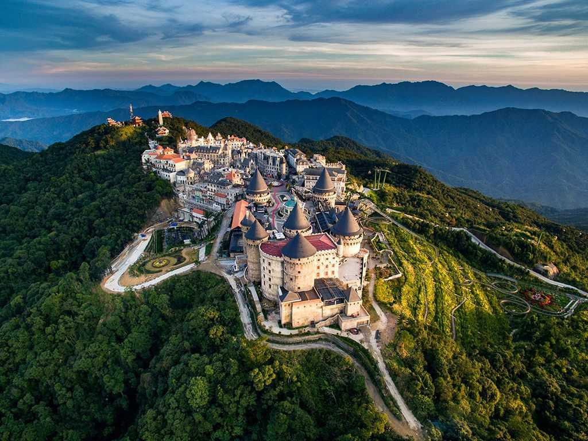
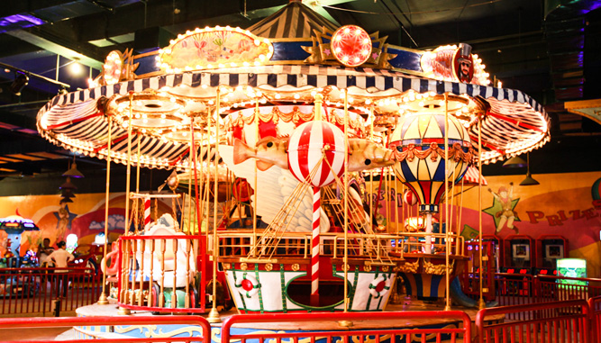
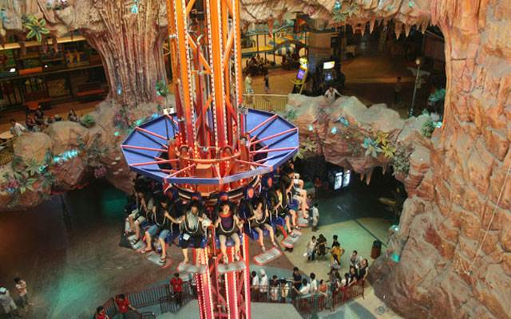
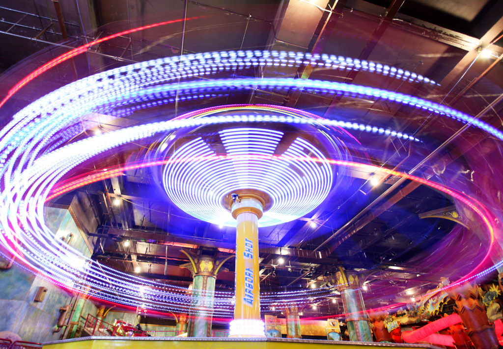
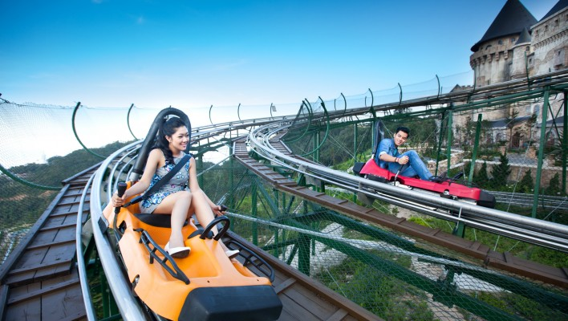

Tọa lạc trên đỉnh núi chúa của thành phố Đà Nẵng, Bà Nà Hill là một trong những địa điểm hấp dẫn du khách trong và ngoài nước đến tham quan vui chơi mỗi năm. Đến Bà Nà Hill du khách sẽ được ngồi cáp treo cao gần 1400m để ngắm nhìn những phong cảnh tuyệt đẹp nơi đây và có thể thử những cảm giác mạnh của những trò chơi thú vị khác nhau.

Bên cạnh đó Bà Nà Hill còn có hệ thống nhà nghỉ, khách sạn, resorf sang trọng đầy đủ tiện nghi đáp ứng cho nhu cầu vui chơi của du khách. Cùng khám phá những vẻ đẹp đó nào.
BÀ NÀ HILL CÓ NHỮNG TRÒ CHƠI GÌ?
Bà Nà Hills đường lên tiên cảnh quả không sai, đến đây du khách có thể tận hưởng hết vẻ đẹp thiên nhiên nơi đây ngoài ra du khách còn có thể thả mình vào những trò chơi đầy thú vị.
1. Vòng quay tình yêu
Vòng quay tình yêu, nơi dành cho những người thích tốc độ và phiêu lưu. Bạn sẽ ngồi trên xe và xoay vòng theo điệu nhạc. Lực xoay ly tâm sẽ làm cho người ngồi bên cạnh đổ người về phía bạn. Khi tốc độ đạt đến đỉnh, một tấm cover sẽ bao bọc xe lại và sẽ cho bạn và người ngồi cùng một không gian riêng tư đầy mới lạ

2. Tháp rơi tự do
Bạn không sợ độ cao? Không Sợ tốc độ? Vậy hãy đến với tháp xoay rơi tự do. Bạn sẽ ngồi trên các ghế lớn và cùng với 15 người khác. Bạn sẽ bị đột ngột bắn lên cao và rơi tự do ở độ cao 29 mét. Trong khi bạn được nâng lên và rơi xuống, ghễ ngồi sẽ xoay tròn quanh tháp và bạn sẽ có những khoảng khắc tuyệt vời để ngắm toàn cảnh khu Fantasy Park.

3. Phi công skyver
Hãy thử ngồi lên và cùng bay với phi thuyền Skiver. với tốc độ xoay cực cao, Skiver sẽ cho bạn cảm giác được bay lượn lên cao xuống thấp với làn gió mát rít qua tai mà bạn chưa bao giờ được cảm nhận.

4. Xe trượt ống
Bạn là người đam mê tốc độ và muốn tìm cảm giác mạnh trên cao? Hãy thử điều khiển xe trượt ống len lỏi qua những cung đường xoắn ốc đầy thách thức. Được thiết kế an toàn tuyệt đối cùng 2 vòng xoáy kép duy nhất tại Việt Nam, trò chơi này tạo bạn cảm giác mạnh mẽ thoải mái
